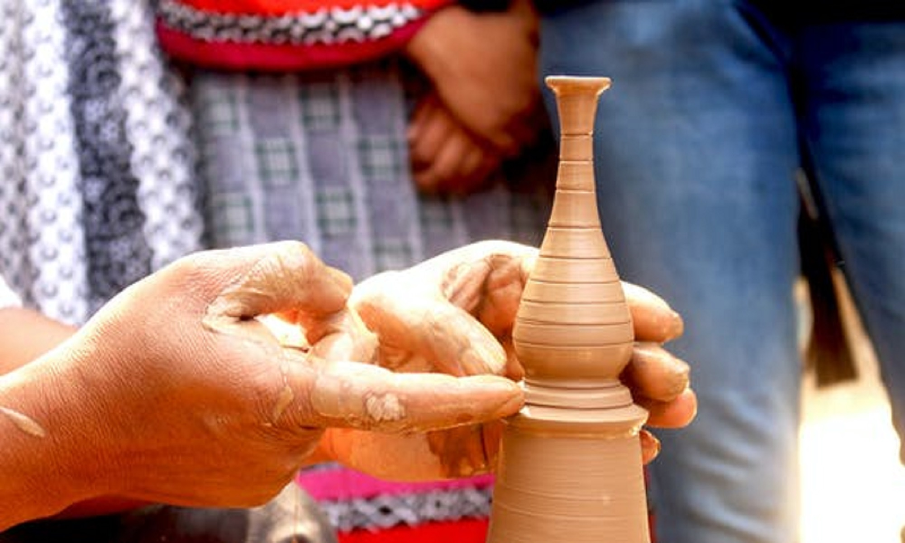
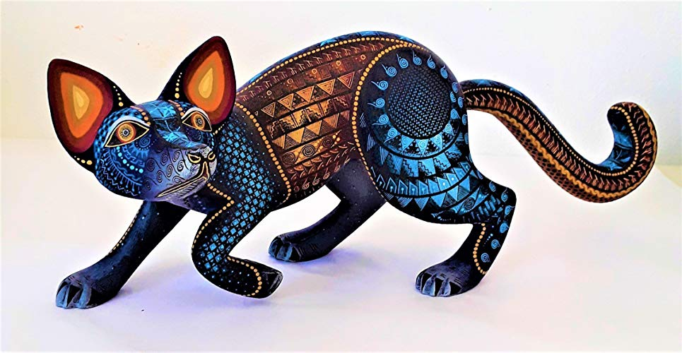
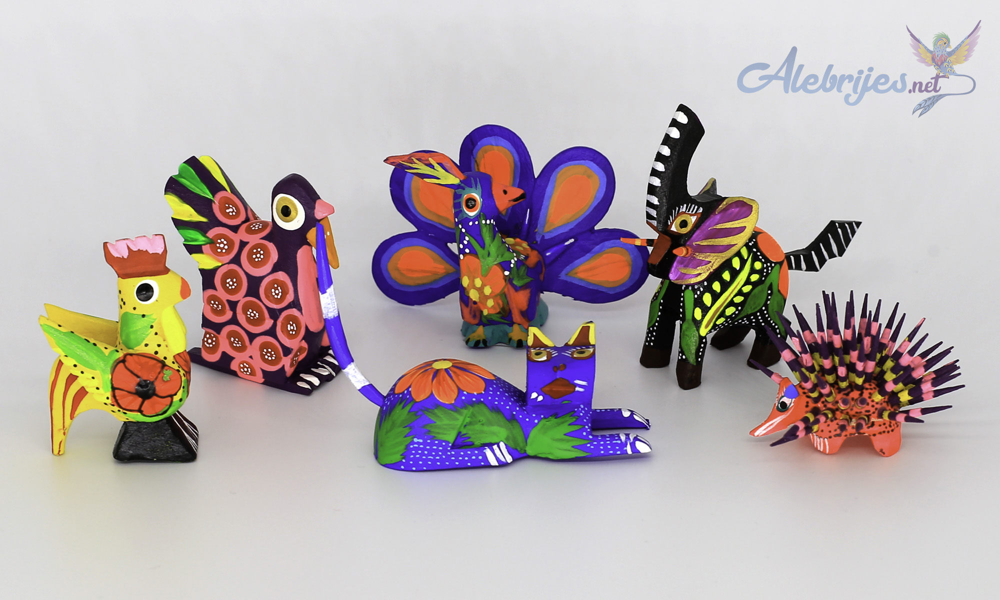

AlebrijesShoop
Crear Producto
Lista de Productos
Inventario
1 / 3

"Hecho a mano significa hecho con el corazón"
2 / 3

"Hecho a mano significa hecho con el corazón"
3 / 3

"Hecho a mano significa hecho con el corazón"
 leoxis.x
leoxis.x @gmail.com
@gmail.com 9513077200
9513077200